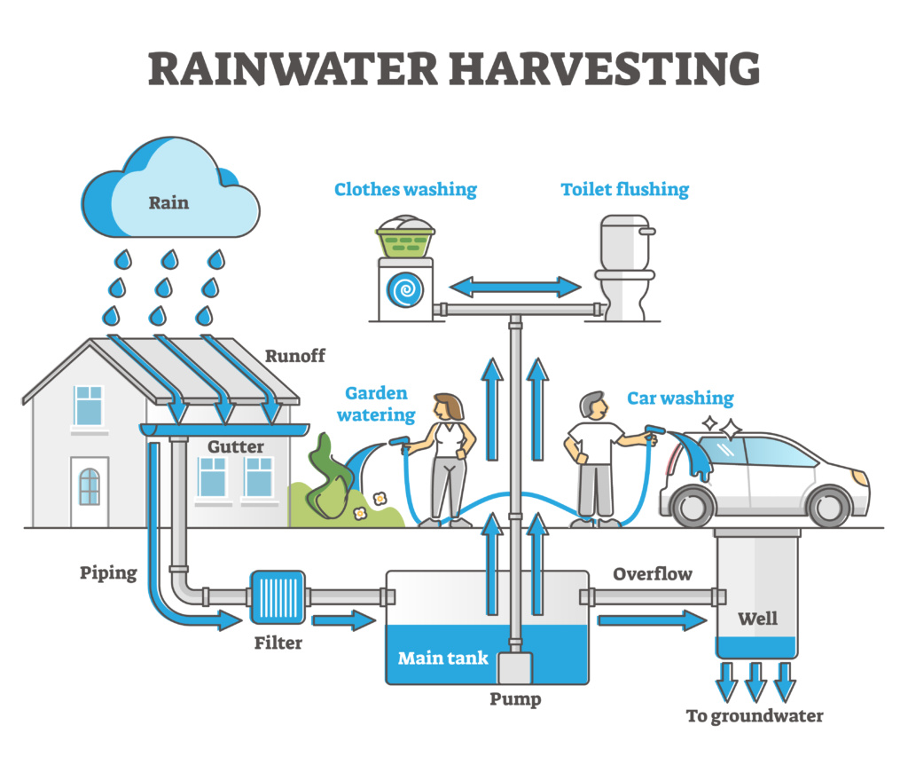

Rooftop rainwater harvesting is a sustainable practice that involves collecting and storing rainwater from the rooftops of buildings. This method is particularly effective in urban areas where space is limited, and it helps to reduce stormwater runoff, recharge groundwater, and provide a reliable source of water for various uses. The collected rainwater can be used for irrigation, flushing toilets, washing clothes, and even for drinking water after proper treatment. Rooftop rainwater harvesting systems typically include gutters, downspouts, storage tanks, and filtration systems to ensure the water is clean and safe for use. By implementing rooftop rainwater harvesting, communities can conserve water resources, reduce flooding risks, and promote environmental sustainability.
Roof top rainwater harvesting is a method of collecting and storing rainwater from the rooftops of buildings for later use. It involves the installation of a system that directs rainwater from the roof into storage tanks or reservoirs. The process begins with the collection of rainwater through gutters and downpipes, which are then filtered to remove debris. This filtered water is stored in containers like tanks or underground reservoirs. The harvested rainwater can be used for various non-potable purposes such as irrigation, flushing toilets, or cleaning, and in some cases, it can be treated for drinking. This technique reduces dependency on groundwater, conserves potable water, and helps in mitigating water scarcity. It also reduces runoff, preventing soil erosion and minimizing the risk of urban flooding. Roof top rainwater harvesting is an eco-friendly, cost-effective solution that promotes sustainable water management in both urban and rural areas.